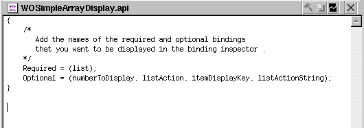
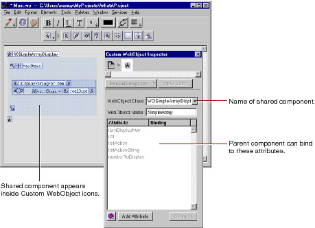

For more information, see "Reusable Components" in the WebObjects Developer's Guide.
 Table of Contents
Table of Contents  Next Section
Table of Contents Previous Section
Next Section
Table of Contents Previous Section
Reusable Components
One of the strengths of the WebObjects architecture is its support of reusable components. Any component that you define, whether it represents an entire page or part of a page, can be reused by any WebObjects application. A component can be used in multiple pages or even multiple times in the same page. Reusable components can be used for such items as headers, footers, and navigation bars.
You are asked whether you want to add the component to your project. If you respond Yes, the component is copied to the project and placed in the Web Components suitcase, along with all the other components.
The child component then appears in the window at the insertion point. It is displayed graphically inside a custom WebObject element.
For example, the WOSimpleArrayDisplay shared component that lives in the WOExtensions framework exports the following attributes, as defined in its .api file:

When you use this component in one of your pages, it looks like this:

The Inspector shows the child component's attributes. As with any other dynamic element, you can bind the child component's attributes to keys and actions in the parent component's code.
Note: When you create a component that is specifically designed to be used within other pages, specify "Partial document" in the Page Attributes Inspector popup list (see "Setting Page Attributes"). This way WebObjects Builder does not wrap <HTML>, <HEAD>, and <BODY> tags around your component.
If your reusable component is complex and you want to declutter the display, you can assign an image to the component that is displayed when the element is collapsed. Assign an image to your component by simply placing the graphics file (named after your component) in the .wo component directory. For example, if your component name is MyComponent, place MyComponent.tif in your MyComponent.wo directory.
Table of Contents Next Section